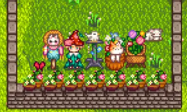
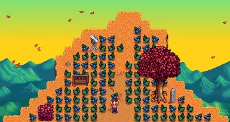
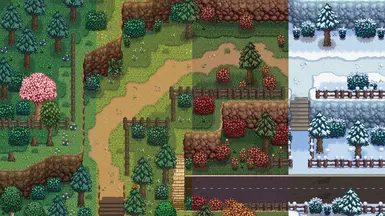
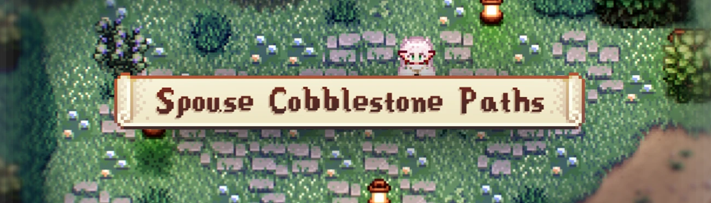
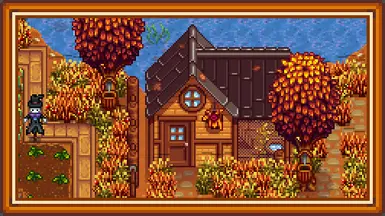
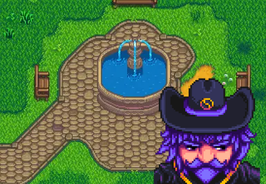
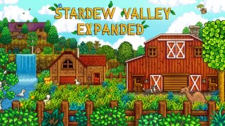
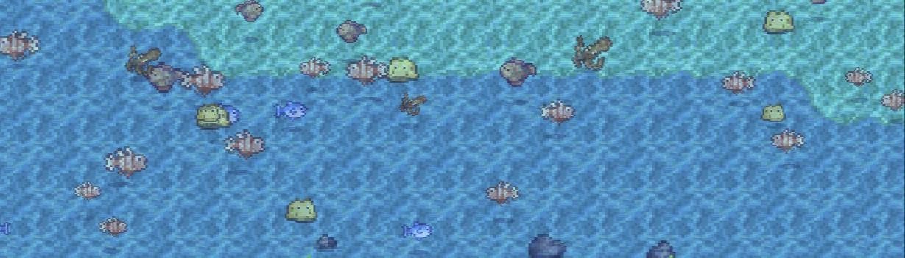
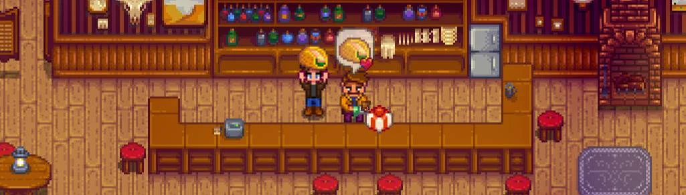

FRAMEWORKContent Patcher
Фреймворк для Stardew Valley, позволяющий модам изменять игровой контент без замены оригинальных файлов.
Требуется
Коллекция модов для фермы, персонажей, визуала и новых возможностей Stardew Valley.
Найди нужный мод одним нажатием.

FRAMEWORKФреймворк для Stardew Valley, позволяющий модам изменять игровой контент без замены оригинальных файлов.

FARMФреймворк, который управляет появлением объектов и существ в игровых локациях.

VISUALЯркая визуальная переработка мира Stardew Valley с обновлёнными текстурами окружающей среды.

PATHSКаменные дорожки для оформления фермы и окружающего мира.

BUILDINGSСезонные варианты построек, меняющие внешний вид фермы в течение года.
Добавляет сезонные наряды и обновляет внешний вид персонажей Stardew Valley.

TILESETSНабор дополнительных тайлсетов для оформления мира Stardew Valley.

EXPANSIONБольшое расширение с новыми локациями, персонажами, событиями и дополнительным контентом.

QUALITY OF LIFEПоказывает рыб, которых можно поймать, прямо в воде во время рыбалки.

CHARACTERSПомогает следить за дружбой с жителями и показывает полезную информацию о подарках.
В этой категории пока нет модов.